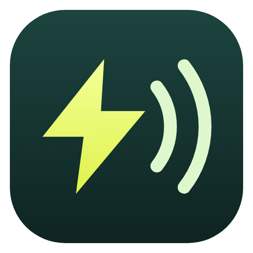

Speak Text
Simple and
fast
reader.
Select text on your Mac and run one Raycast command. A natural voice reads it at your speed, on your device.
0:00
Free. Needs Raycast on macOS 13 or later. Source and setup
Space pause ←→ skip 5 s −= speed